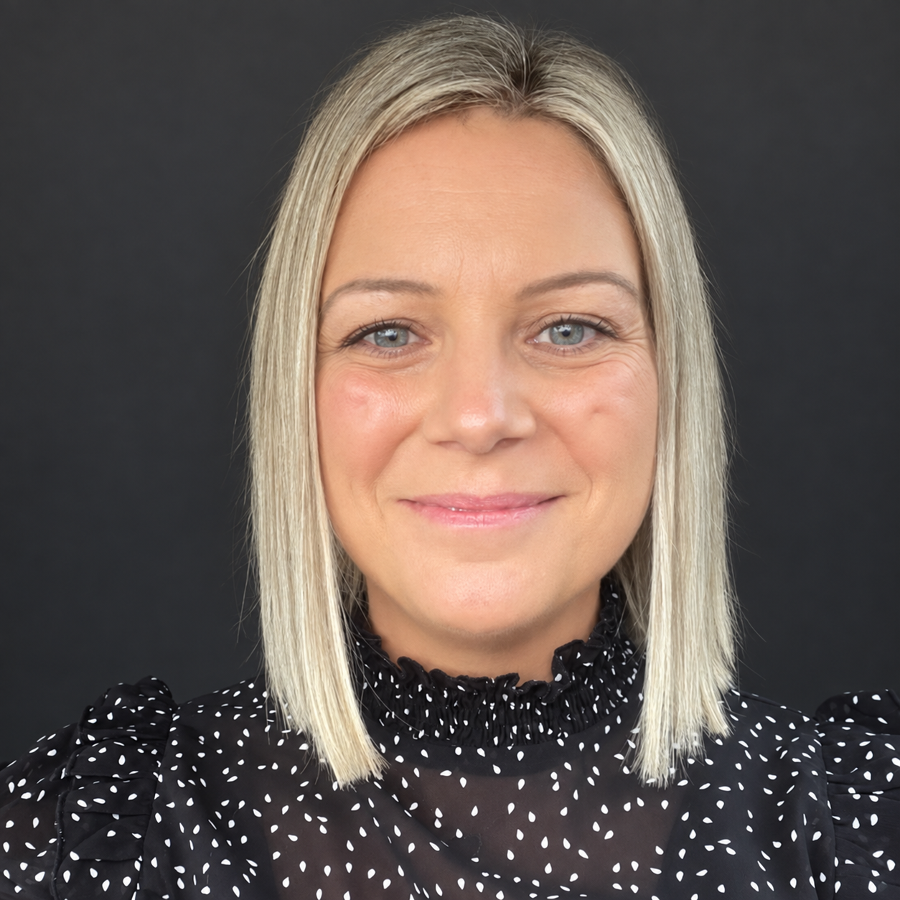
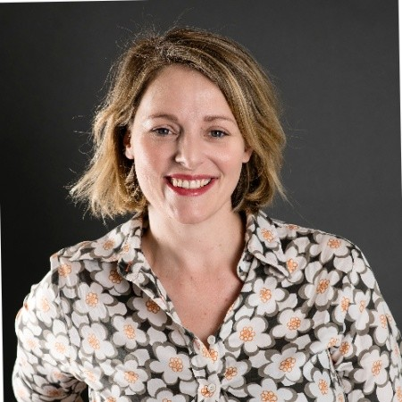

Amy TinleyFounder & Registered NurseLinkedIn profile →
Elite Nurse Partners helps aged-care providers explore a more supported pathway for registered nurses - prepared around the service, the residents and the practical realities of the region.
They created ENP after facing the same workforce pressures in their own businesses. They developed a model that gave them a more dependable way to prepare, support and sustain the nursing workforce around the service.
That lived experience is now the basis of the ENP partnership for aged-care providers who want a workforce relationship that can hold up over time.
Direct experience, practical support and a personal regional approach.


ENP brings specialist aged-care understanding to the workforce pathway. The aim is to make the relationship clearer and more supported for the provider, the nurse and the people receiving care.
Clarify the role, the environment, the expectations and the readiness required before placement.
Coordinate the practical transition into your service and the surrounding community.
Keep communication, milestones and support visible as the relationship develops.
A regional aged-care home had relied on agency RNs for more than two years. Elite Nurse Partners supplied a full-time RN who remained in the role for two years, completed the home’s local requirements and became familiar with residents, systems and escalation pathways.
The result was a more consistent workforce, less repeated agency coordination and a supported alternative to ongoing agency dependence.
You do not need to complete a long assessment. Share enough context for ENP to understand whether a conversation is worthwhile.
Tell Elite Nurse Partners where your service is based and what you would like to discuss. Amy Tinley owns callback follow-up, with a response within one business day.
Choose a time through Amy's calendar for immediate confirmation. If you prefer a callback, Amy will respond within one business day.
Book a conversation